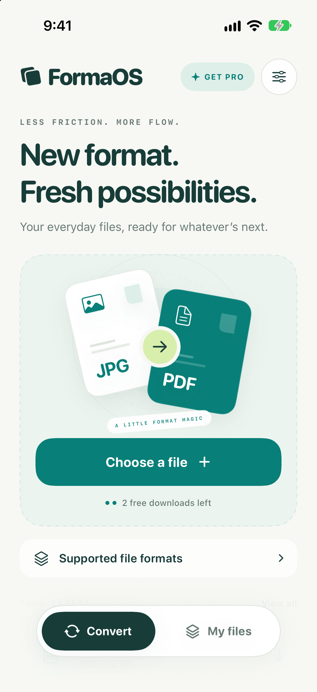
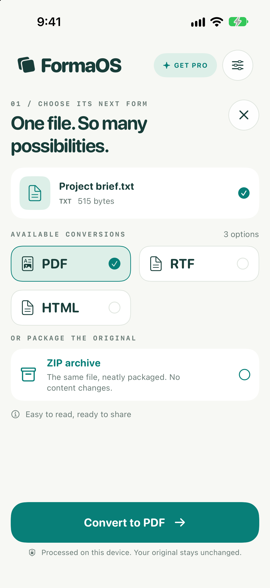
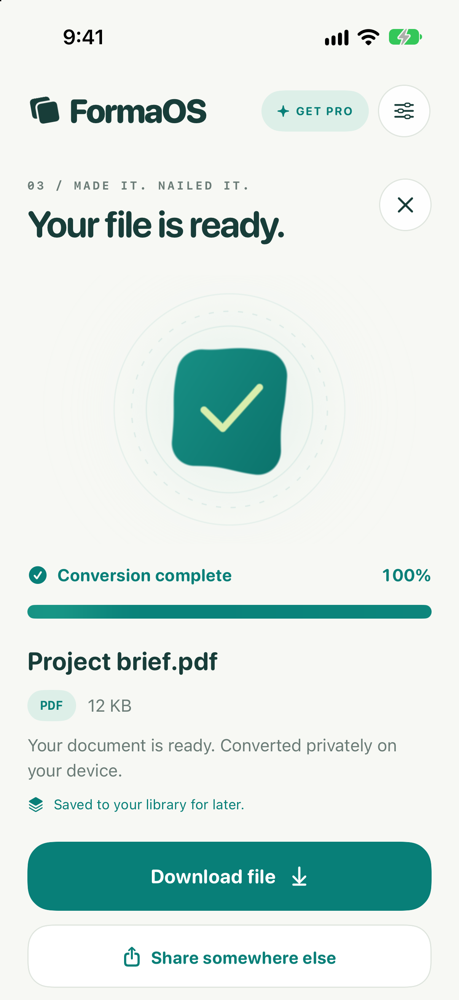
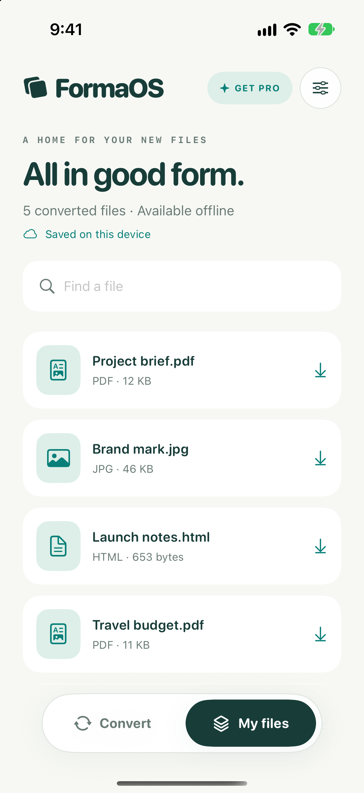
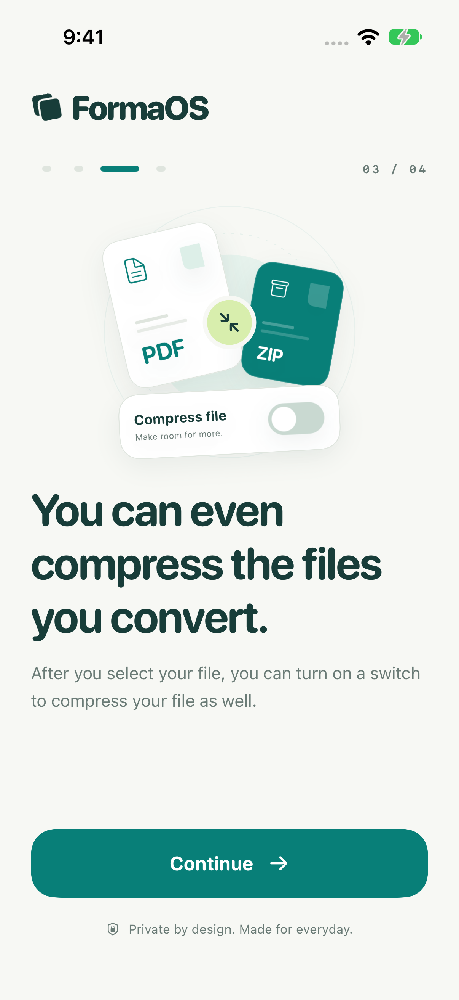
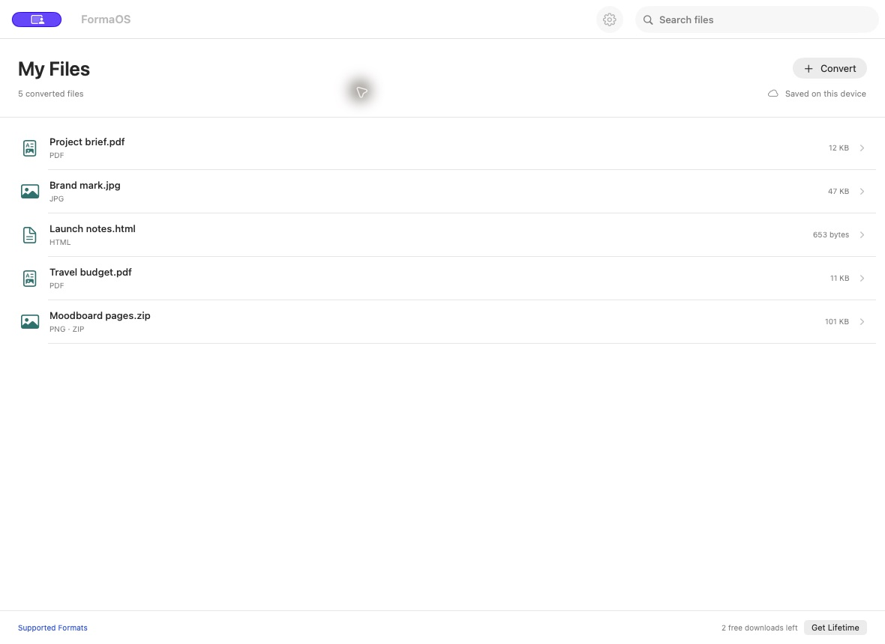

Drop something in.
A photo, document, song, or video. Choose your file to get started.
Convert images, documents, audio, and video into the formats you need. Choose from compatible options, compress your output, and keep every converted file in one place.
See how it works ↗
The actual app. Ready for your files.No guessing which format works. FormaOS checks your file and shows the options your device supports.
A photo, document, song, or video. Choose your file to get started.
Pick an available format. Turn on compression when you want to save a little space.
Save to Files, share with another app, or come back to it in your FormaOS library.
A closer look at the actual iPhone app. Choose a format, save the result, and find it again in My Files.

See which formats are available.

Download or share your converted file.

Find your converted files in the app.
Tap a sample to see how choosing a new format feels.
Interactive preview. Sample files only; nothing is uploaded or converted on this website.
Your original stays just as it is.

A big attachment shouldn’t get in the way of a good idea. Switch on compression as you convert, then choose what matters to you.
A practical middle ground between file size and quality.
Prioritize a lighter file. Images and media may lose some detail.
Compression depends on the format. Some outputs use a lossless ZIP. If a compressed copy isn’t smaller, FormaOS keeps the converted file.
Conversions run locally. Your file doesn’t need to visit a conversion server.
Converted files stay together in the app, ready to download again when you need them.
Save a copy to Files or share it with another app. Your original stays unchanged.

FormaOS shows compatible options after inspecting your file. It supports common image, document, audio, and video workflows. Some proprietary formats need their original app; ZIP packaging can keep those files intact.
Office and ebook conversions extract readable text. Complex layouts, images, charts, and interactive content may not carry over. The app explains these limits before you convert.
You get two successful downloads to try FormaOS. After that, a lifetime purchase unlocks continued conversion and downloading. The app displays the available purchase price.
FormaOS is being prepared for release on iPhone, iPad, and Mac. An App Store link will be added here when it’s available.
FormaOS for iPhone, iPad, and Mac.
Currently in development.